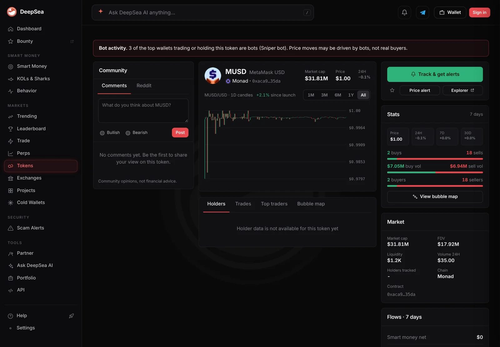
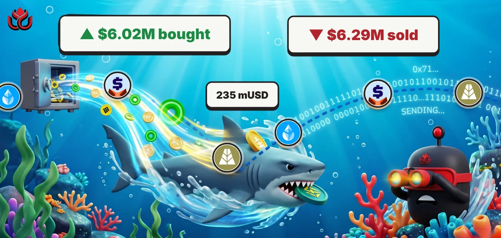

One Monad shark made 267 of 268 trades in a day. Its 30-day loss grew to $1.35 million
One wallet made almost every shark trade DeepSea tracked on Monad, cycling $7.1 million through two dollar tokens. Its losses keep growing.
Key points
- In the 24 hours to 8:49 p.m. ET on November 9, 2026, one shark wallet made 267 of the 268 Monad shark trades DeepSea tracked: $6.02 million bought, $6.29 million sold.
- Most trades were in two dollar tokens: 235 in MetaMask USD (mUSD) and 12 in AUSD, about $7.1 million bought and sold in total.
- DeepSea puts the wallet's 30-day realized result at minus $1.35 million, worse than minus $1.15 million on November 5.
 What DeepSea's data shows
What DeepSea's data shows
DeepSea's live feed lists two shark wallets on Monad in the 24 hours to 8:49 p.m. ET on November 9. The one DeepSea shortens to 0xd5…eaee made 267 trades: $6,018,811 bought and $6,285,959 sold. The other, 0x22…456a, made one trade, a $375,240 sale of cbBTC (Coinbase's wrapped bitcoin).
The busy wallet worked mostly in stablecoins. mUSD had 235 trades, $1,246,410 bought and $1,327,384 sold. AUSD had 12 trades, $2,197,570 bought and $2,348,547 sold. Together that is about $7.12 million turned over for a net of about minus $232,000.
It is the same wallet behind our November 5 story, when it made 246 trades in a day.

Data: DeepSea (desea.io), checked November 9, 2026, 8:49 p.m. ET.
The ether trades
DeepSea's Monad totals also show a $2,490,972 buy of wstETH (staked ether) in 3 trades and a $2,367,412 sale of WETH in 6 trades. We reported both on November 9. The new detail: DeepSea's wallet totals add up only if 0xd5…eaee made both, since it accounts for every Monad buy in the feed. The data does not show whether the two were one swap.
Smaller lines: $167,740 of FUSDLP sold, $74,876 of PT-USDat-14JAN2027 (a fixed-yield token) sold and $10,794 of WMON bought. In the last hour, the wallet sold $58,990 of mUSD in 2 trades.
0xd5…eaee, 24 hours on Monad
US$ million
24 hours to 8:49 p.m. ET, November 9, 2026. Source: DeepSea live feed.
Losses in the numbers
DeepSea's profit table shows the wallet at minus $191,809 realized over 7 days (321 closed trades, 153 winners) and minus $1,348,551 over 30 days (1,050 closed trades, 472 winners). On November 5 the 30-day figure was minus $1.15 million.
DeepSea's mUSD page on Monad carries a bot warning: it flags 3 of the top wallets trading or holding the token as sniper bots.

Checked against CoinGecko
We checked the tokens on CoinGecko alongside DeepSea. At 9:03 p.m. ET, MetaMask USD was at $0.9990 with $2.27 million of 24-hour volume across the markets CoinGecko tracks, and AUSD was at $0.9990 with $8.06 million. This one wallet's mUSD buys and sells ($2.57 million) are larger than CoinGecko's mUSD volume figure, which counts only the markets CoinGecko lists. MON was at $0.0166, up 4.5%.
LC Insight analysis
This section is our reading of the facts above, not a statement of fact.
- We think this wallet is a big share of what DeepSea calls shark activity on Monad. A count of 267 means one active trader, not a crowd.
- Swapping between two dollar tokens hundreds of times does not change its exposure much. The losses in DeepSea's table suggest the strategy is not paying so far, though realized figures leave out open positions.
What's next
- Whether the 30-day loss stops growing
- Whether the wallet keeps the wstETH it bought or sells it
Disclaimer. This article is based on public information and the sources listed below as of the update time shown. It is for information only and is not investment, legal or tax advice. Figures may change as companies and authorities publish new data.
Sources
- DeepSea live feed, 1-hour and 24-hour shark aggregates (fetched November 9, 2026, 8:49 p.m. ET)
- DeepSea, 7-day and 30-day realized PnL per tracked wallet (fetched November 9, 2026, 8:49 p.m. ET)
- DeepSea, mUSD (Monad) token page (November 9, 2026)
- CoinGecko, MetaMask USD (November 9, 2026, 9:03 p.m. ET)
- CoinGecko, AUSD (November 9, 2026, 9:03 p.m. ET)
- CoinGecko, MON price (November 9, 2026, 8:54 p.m. ET)